Teach Yourself Deep Learning
A compact curriculum for learning the durable structure behind deep learning: math, optimization, representation, architectures, training systems, and evaluation.
If you are a software engineer, data scientist, researcher, or technical operator trying to learn deep learning seriously, you do not need another list of hundreds of links. You need answers to these questions:
- Which foundations should you learn, and why?
- What is the best main resource for each foundation?
- What should you build so the knowledge becomes operational?
This guide is an attempt to answer those questions in the same spirit as Teach Yourself Computer Science: one strong path, a small number of excellent resources, and short reasons for each recommendation.
Inspired by TeachYourselfCS. Maintained by Marcos Lino.
Recommended sequence
Start with the structure
Foundations first, then core neural-network mechanics, then a specialization branch. Systems, evaluation, and papers come after you can train and inspect models.
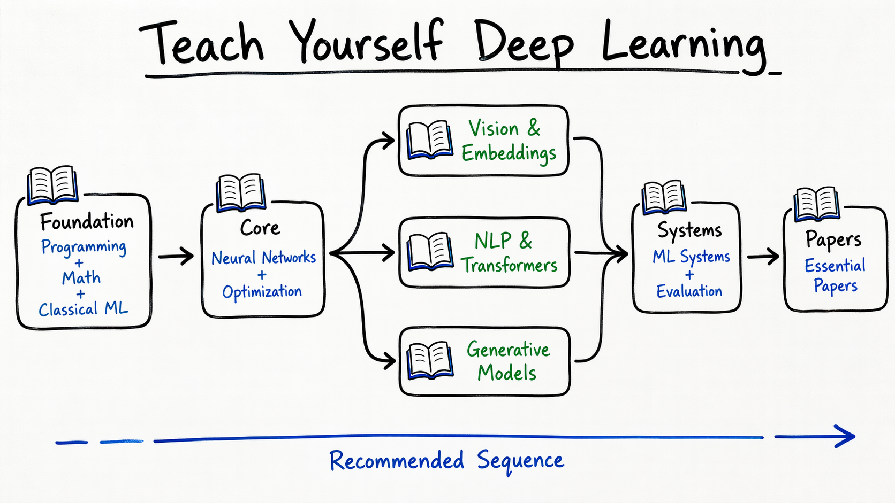
Core philosophy
Deep learning is not mainly about memorizing architectures. It is about understanding what is being optimized, what a model can represent, which data distribution it sees, what inductive bias the architecture imposes, what failure modes the training loop creates, and how to evaluate whether the model actually learned.
TL;DR:
Study the twelve subjects below in roughly the presented order. Use the main resource as the spine, build at least one project for each major cluster, and revisit the topics as your work becomes more specialized.
| Subject | Why study? | Main resource | Practice |
|---|---|---|---|
| Programming | You need to implement training loops, inspect tensors, debug shapes, and read real model code. | Dive into Deep Learning | Implement every model you read about. |
| Mathematical Foundations | Deep learning is applied linear algebra, calculus, probability, numerical optimization, and information theory. | Mathematics for Machine Learning | Derive gradients and work through numerical examples. |
| Classical Machine Learning | Bias, variance, regularization, validation, and likelihood still govern neural models. | An Introduction to Statistical Learning | Build baselines before neural models. |
| Neural Networks | Backpropagation, initialization, normalization, and training dynamics are the core mechanism. | Understanding Deep Learning | Train small networks and inspect gradients. |
| Optimization | Most real deep learning work is making training actually work. | Deep Learning | Compare SGD, momentum, Adam, schedules, and regularization. |
| Computer Vision | Vision makes convolutions, invariance, augmentation, contrastive learning, and embeddings concrete. | Computer Vision: Algorithms and Applications | Train a CNN and an embedding search system. |
| NLP and Transformers | Transformers dominate language, vision-language, coding, agents, and many sequence problems. | Speech and Language Processing | Fine-tune and evaluate a small transformer. |
| Generative Models | Modern deep learning is increasingly generative: LLMs, diffusion models, VAEs, and multimodal generation. | Deep Learning with Python, 3rd ed. | Build one autoregressive model and one diffusion toy model. |
| Representation Learning | Embeddings are learned coordinate systems for meaning, similarity, retrieval, and decision-making. | Understanding Deep Learning plus core papers | Evaluate embeddings with retrieval, clustering, and drift checks. |
| Deep Learning Systems | Training in a notebook is not the same as building a reliable learning system. | Designing Machine Learning Systems | Build reproducible data, training, serving, and monitoring pipelines. |
| Evaluation and Failure Modes | Bad evaluation is the fastest way to fool yourself. | Reliable Machine Learning | Create leakage, robustness, calibration, and product-metric checks. |
| Research Papers | Books teach foundations. Papers teach the frontier and the real shape of progress. | About 25 essential papers | Reproduce small versions of key results. |
The core books
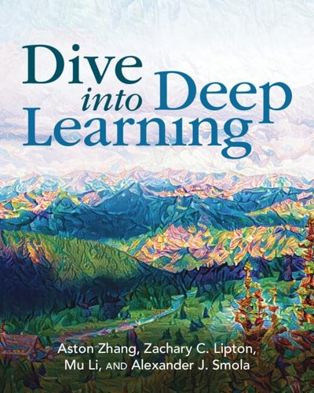
Dive into Deep Learning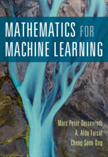
Mathematics for Machine Learning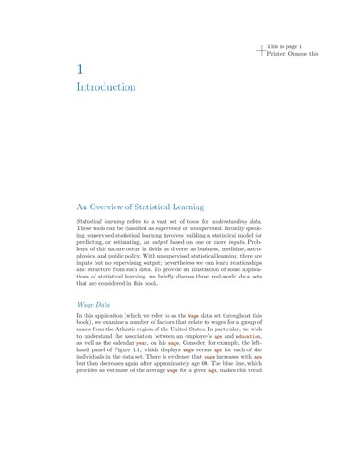
An Introduction to Statistical Learning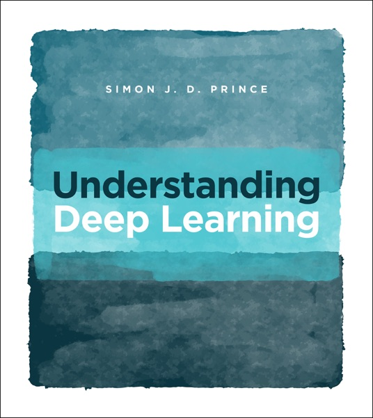
Understanding Deep Learning Deep Learning
Deep Learning
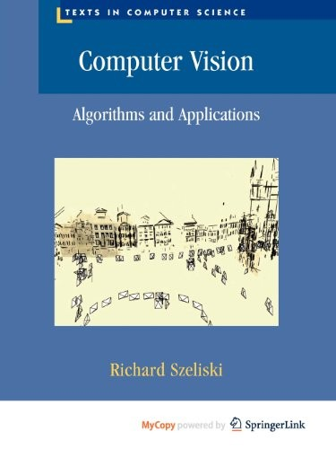
Computer Vision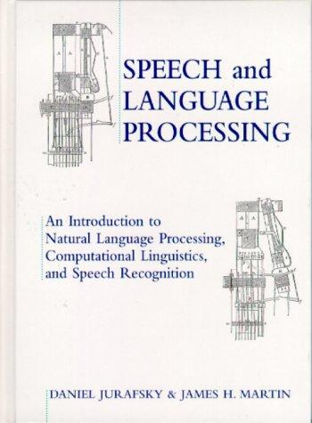
Speech and Language Processing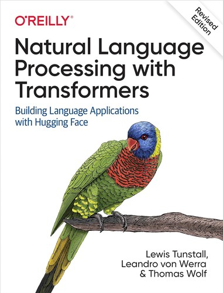
NLP with Transformers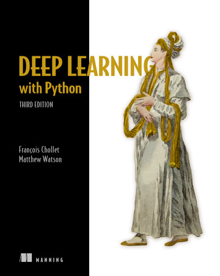
Deep Learning with Python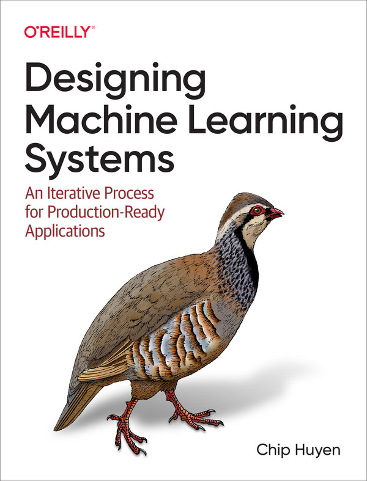
Designing ML Systems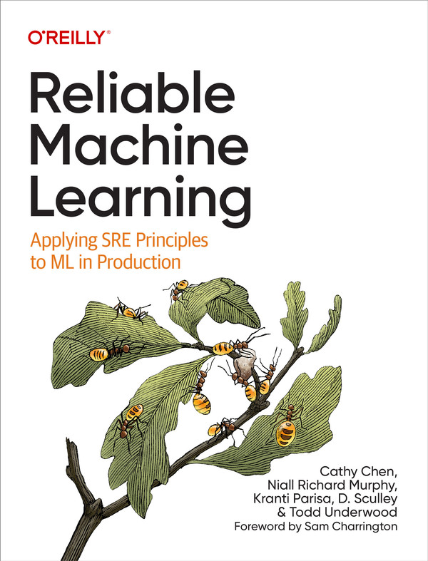
Reliable Machine LearningBook covers are stored locally in this repo and used as visual identifiers for the recommended resources.
Still too much?
If the full curriculum feels too large, start with three resources: Dive into Deep Learning, Understanding Deep Learning, and Designing Machine Learning Systems. Pair them with one serious project: build an image or text embedding search system with a real evaluation harness. That path gives you implementation fluency, model understanding, and systems instincts.
Why learn deep learning?
There are two ways to learn deep learning. One is model-first: CNN, RNN, Transformer, GAN, Diffusion, LLM. That teaches history and vocabulary, but it often leaves people unable to diagnose training failures or design reliable evaluations.
The better path is problem-first: representation, optimization, data, architecture, training dynamics, evaluation, and systems. That is closer to how deep learning work actually succeeds or fails.
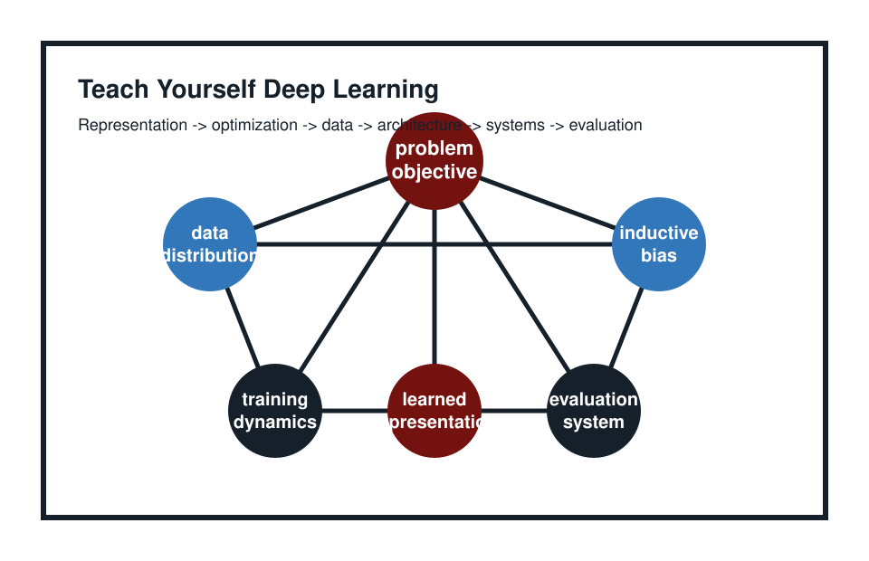
The format and editorial restraint are deliberately modeled after TeachYourselfCS.
A model can improve a benchmark and still fail the product. A training run can converge while learning the wrong shortcut. An embedding can look useful in a demo and still collapse under distribution shift. The point of this curriculum is to build the judgment to notice those problems early.
Subject guides
Programming for Deep Learning
Before theory matters, you need to be able to implement training loops, inspect tensors, debug shapes, read model code, and reproduce papers. Deep learning programming is not just calling a library; it is understanding how data, tensors, modules, losses, optimizers, and metrics move through a system.
Our standard recommendation is Dive into Deep Learning by Aston Zhang, Zachary Lipton, Mu Li, and Alex Smola. It combines math, executable code, and clear explanations, and it is broad enough to be useful as a first serious book.
Do the exercises. Reading is not enough. Rewrite the examples, break them, change the data, change the model, and inspect what happens.
Mathematical Foundations
Deep learning is applied linear algebra, calculus, probability, numerical optimization, and information theory. Without the math, the field becomes cargo cult: people remember techniques but not why they work or when they fail.
Use Mathematics for Machine Learning by Deisenroth, Faisal, and Ong before going deep into theory-heavy deep learning books.
| Area | Why it matters |
|---|---|
| Linear algebra | Tensors, embeddings, projections, attention. |
| Calculus | Gradients, Jacobians, backpropagation. |
| Probability | Uncertainty, likelihood, generative models. |
| Optimization | SGD, Adam, convergence, loss landscapes. |
| Information theory | Entropy, KL divergence, VAEs, diffusion intuition. |
If you cannot reason about gradients, you are debugging by folklore.
Classical Machine Learning
Deep learning did not replace machine learning. It sits on top of it. If you do not understand bias and variance, overfitting, regularization, cross-validation, likelihood, and baselines, your deep learning understanding will be shallow.
Our suggested resource is An Introduction to Statistical Learning by James, Witten, Hastie, Tibshirani, and Taylor. If you want more math afterward, read The Elements of Statistical Learning by Hastie, Tibshirani, and Friedman.
Use classical models as baselines. If a simple model wins, believe the evidence and inspect the task before adding neural complexity.
Neural Networks and Backpropagation
This is the core mechanism. You should understand how a network computes, how gradients flow, why initialization matters, why normalization helps, and why training fails.
Use Understanding Deep Learning by Simon J. D. Prince as a modern bridge between theory and practice.
Keep these questions active while you study: why do deep networks train at all? Why do gradients vanish or explode? Why does overparameterization help? What does normalization actually stabilize? Why does architecture matter?
Optimization for Deep Learning
Most real deep learning work is not “choose a model.” It is making training work. That means understanding initialization, loss scaling, batch size, normalization, regularization, optimizer behavior, schedules, data order, and numerical stability.
Deep Learning by Goodfellow, Bengio, and Courville is the classic reference. Do not start here as your first book unless you already have the math maturity.
Read selectively: chapter 6 on feedforward networks, chapter 7 on regularization, chapter 8 on optimization, chapter 9 on CNNs, chapter 10 on sequence modeling, then chapter 12 onward for advanced topics.
Computer Vision
Vision is where many deep learning ideas become concrete: convolutions, invariances, augmentation, embeddings, contrastive learning, segmentation, detection, diffusion, and multimodal models.
Use Richard Szeliski’s Computer Vision: Algorithms and Applications as the broad reference. Then study papers and implementations for ResNet, Vision Transformer, CLIP, DINO, Segment Anything, and diffusion models.
If your work involves products, images, clustering, or visual search, make embeddings, metric learning, nearest-neighbor retrieval, and visual similarity first-class topics.
Natural Language Processing and Transformers
Transformers are now the dominant architecture for language, vision-language, coding models, agents, and many sequence problems. Learn the machinery underneath the hype: tokenization, embeddings, attention, pretraining, fine-tuning, instruction tuning, retrieval, and evaluation.
Use Speech and Language Processing by Jurafsky and Martin as the foundation. Pair it with Natural Language Processing with Transformers by Tunstall, von Werra, and Wolf for practical transformer work.
Generative Models
Modern deep learning is increasingly generative: LLMs, diffusion models, VAEs, autoregressive models, and multimodal generation. The point is not to memorize families; it is to understand objectives, latent variables, likelihoods, sampling, and evaluation.
Use Deep Learning with Python, Third Edition by Francois Chollet and Matthew Watson as a practical modern companion. It covers current generative AI while staying implementation-oriented.
| Model family | Learn because |
|---|---|
| Autoregressive models | LLMs and next-token prediction. |
| VAEs | Latent variable modeling. |
| GANs | Adversarial training history. |
| Diffusion models | Image generation and denoising objectives. |
| Flow models | Exact likelihood and invertible networks. |
Generative models are objectives before they are demos.
Representation Learning
This is the missing section in many deep learning curricula. Deep learning is mostly representation learning. Embeddings are not just vectors; they are learned coordinate systems for meaning, similarity, retrieval, clustering, and downstream decisions.
Use Understanding Deep Learning, Dive into Deep Learning, and papers such as SimCLR, MoCo, CLIP, DINO, and BERT. Focus on what makes an embedding useful, what similarity means, when contrastive learning works, why self-supervised models transfer, and how representations fail.
For applied product work, include metric learning, hard negatives, visual similarity, product clustering, nearest-neighbor retrieval, embedding drift, and multimodal embeddings.
Deep Learning Systems
Training a model in a notebook is not the same as building a reliable deep learning system. Real systems require data pipelines, validation, experiment tracking, distributed training, serving, monitoring, feedback loops, evaluation pipelines, drift checks, and reproducibility.
Use Chip Huyen’s Designing Machine Learning Systems. It connects modeling choices to engineering reality.
Evaluation and Failure Modes
Bad evaluation is the fastest way to fool yourself. A model can improve a benchmark and still fail the product. This should be a major section of any deep learning curriculum, not an appendix.
Use Reliable Machine Learning, Designing Machine Learning Systems, and papers on dataset shift, calibration, leakage, and robustness.
Ask concrete questions: What exactly is the model supposed to do? What is the unit of evaluation? What is leakage? What distribution are we testing on? What are false positive and false negative costs? What does “good enough” mean operationally?
Research Papers
Books teach foundations. Papers teach the frontier and the real shape of progress. The site should not list 200 papers; it should choose a small essential set and teach how to read them.
| Topic | Papers |
|---|---|
| Optimization | Adam, Batch Normalization. |
| CNNs | AlexNet, VGG, ResNet. |
| Vision transformers | Vision Transformer. |
| Attention | Attention Is All You Need. |
| Language pretraining | word2vec, BERT, T5. |
| GPT and scaling | GPT-2, GPT-3, Scaling Laws, Chinchilla. |
| Self-supervised vision | SimCLR, MoCo, DINO. |
| Vision-language | CLIP. |
| Generative models | VAE, GAN, DDPM, Latent Diffusion. |
| Retrieval | DPR, RAG. |
| Alignment | InstructGPT. |
Read papers to find the experiment, not just the claim.
Reading order
Practical engineer
- Dive into Deep Learning
- Deep Learning with Python
- Designing Machine Learning Systems
- Natural Language Processing with Transformers
- Selected papers
Research foundation
- Mathematics for Machine Learning
- An Introduction to Statistical Learning
- Deep Learning
- Understanding Deep Learning
- Papers
Vision, embeddings, clustering
- Dive into Deep Learning
- Understanding Deep Learning
- Computer Vision: Algorithms and Applications
- CLIP, DINO, SimCLR, MoCo
- Embedding search and clustering project
Projects
Projects are where the curriculum becomes real. Build these in order of relevance: first the projects that expose the machinery, then the ones that make modern deep learning useful in products.
- Autograd and neural network from scratch.Implement tensors, backpropagation, an MLP, gradient checks, and a tiny training loop.
- Reproducible PyTorch training loop.Train on a small real dataset with configs, seeds, metrics, checkpoints, and experiment notes.
- Baseline and evaluation harness.Build train/validation/test splits, classical baselines, leakage checks, calibration, and error slices.
- CNN with augmentation and regularization.Train a compact vision model and compare augmentation, weight decay, normalization, and schedules.
- Optimizer and normalization lab.Compare SGD, momentum, Adam, batch normalization, initialization, and learning-rate schedules.
- Image embedding search engine.Use CLIP or DINO embeddings with FAISS, nearest-neighbor search, clustering, and retrieval metrics.
- Transformer fine-tuning project.Fine-tune a small language model for classification or extraction and inspect failure cases.
- Retrieval-augmented generation system.Build chunking, embeddings, retrieval, answer generation, citation display, and retrieval evaluation.
- Visual similarity and clustering pipeline.Group related images or products, handle hard negatives, review clusters, and measure drift.
- Tiny diffusion model.Train a small denoising diffusion model so the objective, noise schedule, and sampling loop are concrete.
- Model serving and monitoring service.Serve one model behind an API with validation, logging, latency checks, and data-drift alerts.
- Paper reproduction.Reproduce a small version of one paper, write down the exact deviations, and compare expected versus observed results.
Tools
Tools should support the curriculum, not replace it. Learn the underlying ideas first, then use the tools to move faster and reproduce work.
Opinionated book list
| Section | Main book or resource |
|---|---|
| Programming | Dive into Deep Learning |
| Math | Mathematics for Machine Learning |
| Classical ML | An Introduction to Statistical Learning |
| Neural Networks | Understanding Deep Learning |
| Optimization | Deep Learning |
| Computer Vision | Computer Vision: Algorithms and Applications |
| NLP | Speech and Language Processing |
| Transformers | Natural Language Processing with Transformers |
| Generative AI | Deep Learning with Python, 3rd ed. |
| ML Systems | Designing Machine Learning Systems |
| Evaluation | Reliable Machine Learning |
Frequently asked questions
Who is the target audience for this guide?
This guide is for competent programmers, engineers, analysts, researchers, and product-minded builders who want deep learning foundations without enrolling in a degree program. It assumes you can already write code and are willing to build projects.
Do I need a PhD?
No. You need mathematical maturity, implementation practice, and a habit of careful evaluation. A PhD can be useful for research careers, but it is not required to build strong deep learning systems.
Should I learn PyTorch or TensorFlow?
Learn PyTorch first unless your work environment strongly requires TensorFlow. The more important skill is understanding tensor programs, autograd, training loops, and model debugging.
Should I read papers or books first?
Start with books for foundations, then read papers once you can ask concrete questions about objectives, architectures, data, experiments, and failure modes.
How much math do I need?
Enough to reason about vectors, matrices, gradients, probability distributions, likelihoods, entropy, and optimization. You do not need to master every proof before building, but you should be able to work through the math behind the models you use.
How do I know I actually understand?
You can reimplement small versions, predict what will happen when you change the data or loss, explain failures without hand-waving, build baselines, and design evaluations that would catch shortcuts and leakage.
Who made this?
This is an independent deep learning curriculum by Marcos Lino, inspired by the compact public format of TeachYourselfCS. It is not affiliated with TeachYourselfCS or Bradfield.
Contact
Email: mfilipelino@gmail.com. Project page: mfilipelino.github.io/teachyourselfdl.